👋
認識 YoYo｜劉又銘
我是 YoYo。一起從峴港的海岸與市區，走到巴拿山和會安古鎮。
劉又銘 YoYo
國際領隊｜旅行內容創作者
Yo 在東南亞，帶團，也在過生活
把景點裡外的旅行細節，整理成你會想收藏的畫面。
把景點裡外的旅行細節，整理成你會想收藏的畫面。
✨ 這趟中越可以先這樣理解
中越有兩種很不一樣的旅行感：巴拿山是纜車、雲霧和歐式街景；會安則是黃牆、燈籠和河邊的慢步調。
巴拿山的雲霧和會安的燈籠，各有不一樣的風景。
巴拿山的雲霧和會安的燈籠，各有不一樣的風景。
YoYo 的中越小筆記
- 會安古鎮傍晚後
燈籠慢慢亮起來後，古鎮會換成另一種比較安靜又有顏色的樣子。 - 巴拿山的雲霧
山上的天氣和光線常常在變，晴天有晴天的開闊，起霧時也有自己的氣氛。 - Marou 巧克力
口味和包裝都很有越南的個性，先挑自己真正會想帶回家的那一款就好。 - Mót 花草飲
在會安散步走累時，來一杯冰涼飲料，剛好替腳步留一點空白。
🍜
📍 會安古鎮｜先吃點什麼
YoYo 帶你吃
從峴港披薩、夜市到會安三明治與飲料，挑喜歡的慢慢吃。
Bánh Mì Phượng 越式三明治
外酥的法國麵包夾入餡料，逛古鎮時想吃點有飽足感的，可以試試看。
外酥的法國麵包夾入餡料，逛古鎮時想吃點有飽足感的，可以試試看。
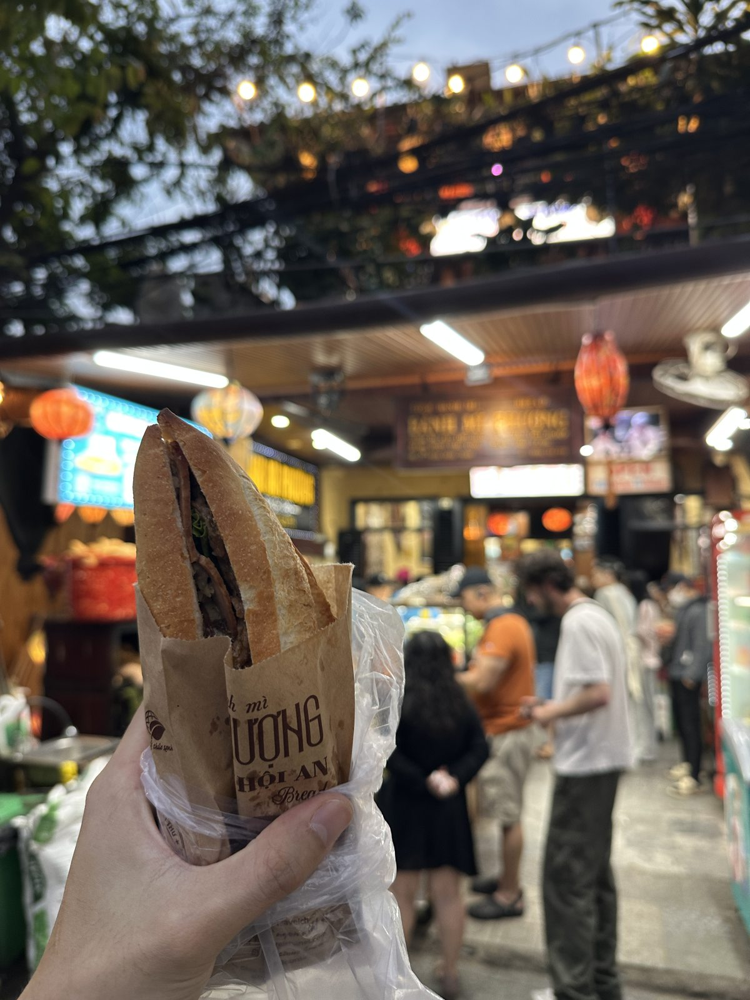
Mót 蓮花飲與 Cộng 咖啡
逛古鎮時可以來杯 Mót 蓮花飲；走累了也能到 Cộng 咖啡坐坐，喜歡椰香的可以試試椰子咖啡。
逛古鎮時可以來杯 Mót 蓮花飲；走累了也能到 Cộng 咖啡坐坐，喜歡椰香的可以試試椰子咖啡。
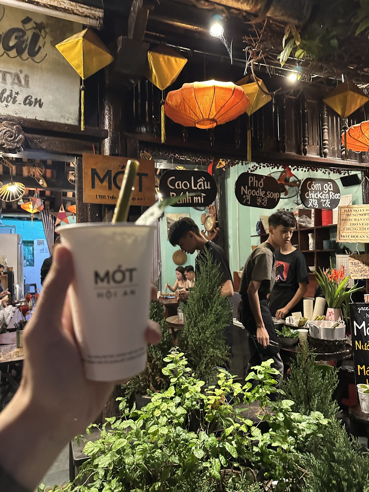
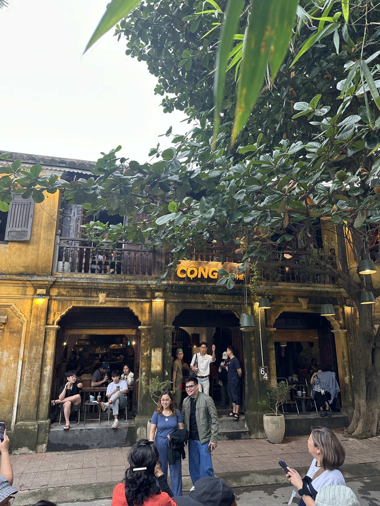
★
Pizza 4P’s 披薩
在峴港想換個口味，可以和朋友分享披薩；分店與營業資訊出發前再確認。
在峴港想換個口味，可以和朋友分享披薩；分店與營業資訊出發前再確認。
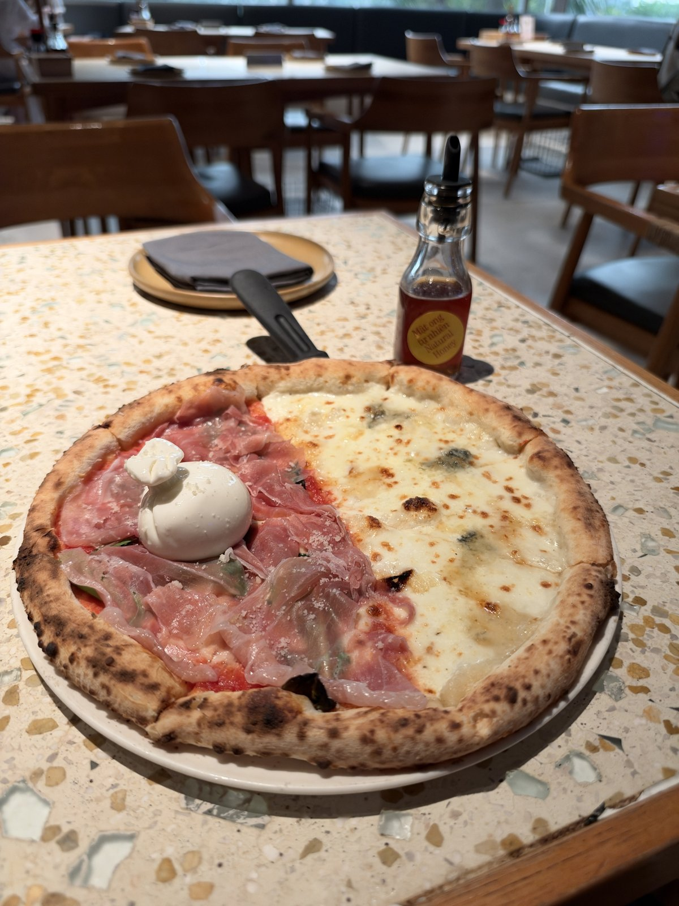
- 山茶夜市
重點是市集裡的熱鬧感和邊走邊看的節奏，不需要追著某一攤跑。 - Maison Marou 巧克力
喜歡巧克力的人可以留意一下不同產地和口味，當成旅途中一段甜甜的停留。
🍴 中越慢慢吃
這裡好吃的東西常常就藏在散步、逛市集或休息的空檔裡。留一點肚子和時間給當下遇到的味道，比照著清單趕著吃更有旅行感。
這裡好吃的東西常常就藏在散步、逛市集或休息的空檔裡。留一點肚子和時間給當下遇到的味道，比照著清單趕著吃更有旅行感。
🗺️
YoYo 帶你走跳
從峴港市區、海邊到巴拿山與會安，看看中越不一樣的風景。
峴港・巴拿山
海岸、市區、山景與表演，都整理在這裡。
峴港海岸與市區
美溪沙灘｜海岸線與夜晚海景
美溪沙灘有綿長海岸線，是峴港最美的海岸風景之一。照片記錄的是晚上的海邊；有興趣可以在自由時間，依住宿位置與當天安排前往散步。實際行程仍以行前通知和行程表為準，夜間留意海浪與照明。
美溪沙灘有綿長海岸線，是峴港最美的海岸風景之一。照片記錄的是晚上的海邊；有興趣可以在自由時間，依住宿位置與當天安排前往散步。實際行程仍以行前通知和行程表為準，夜間留意海浪與照明。
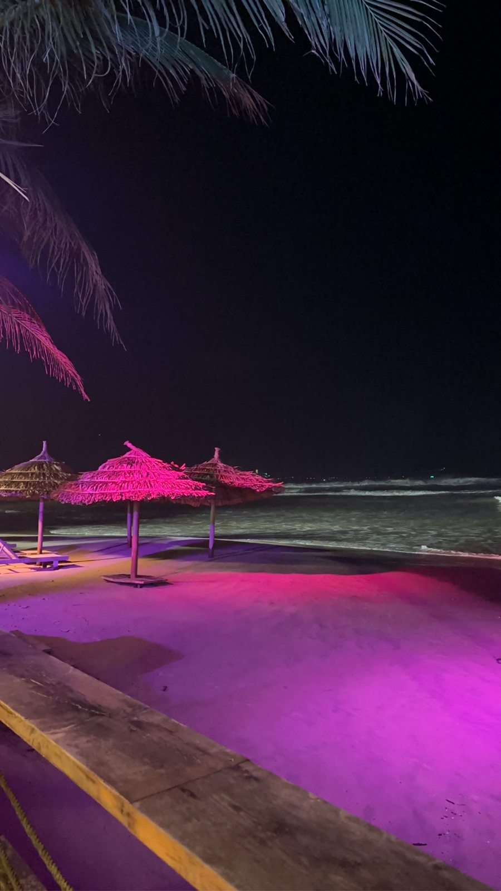
粉紅教堂｜峴港大教堂
粉色外牆和尖塔是市區很有辨識度的畫面。
粉色外牆和尖塔是市區很有辨識度的畫面。
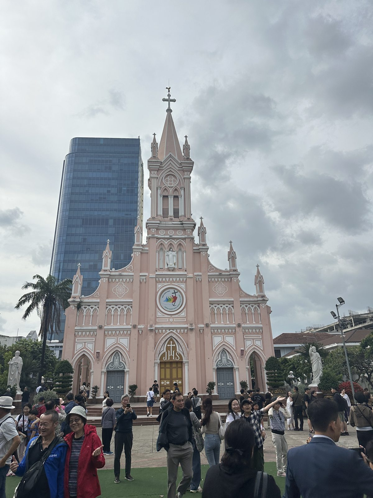
APEC 公園｜生命樹
沿著韓江散步時，可以留意公園裡的生命樹雕塑，從不同角度看看它的線條。
沿著韓江散步時，可以留意公園裡的生命樹雕塑，從不同角度看看它的線條。
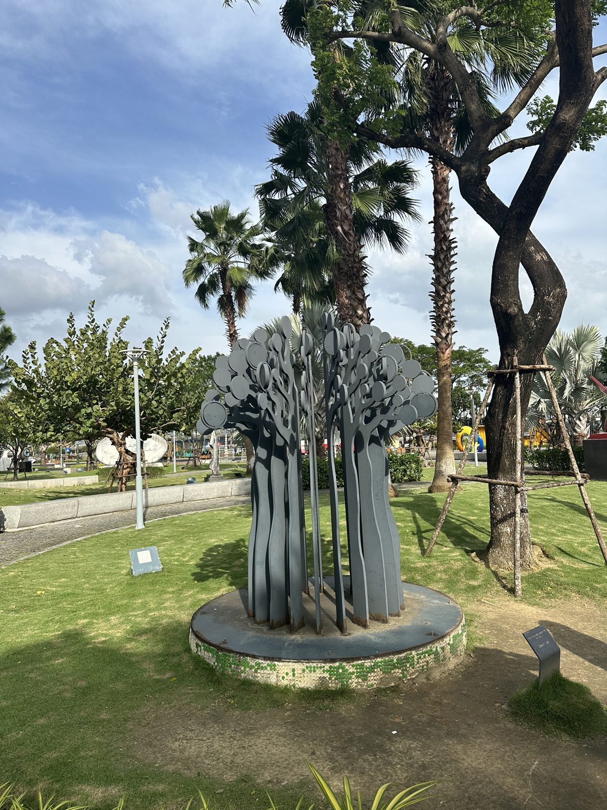
_-_img_07.jpg){kind=link}
山茶半島
從市區往海邊看，山茶半島把山和海連在一起；靈應寺與海岸風景是認識峴港的另一個角度。
從市區往海邊看，山茶半島把山和海連在一起；靈應寺與海岸風景是認識峴港的另一個角度。
奧黛秀
透過傳統服飾、音樂與舞台演出感受越南文化。是否安排及場次以當團行程為準。
透過傳統服飾、音樂與舞台演出感受越南文化。是否安排及場次以當團行程為準。
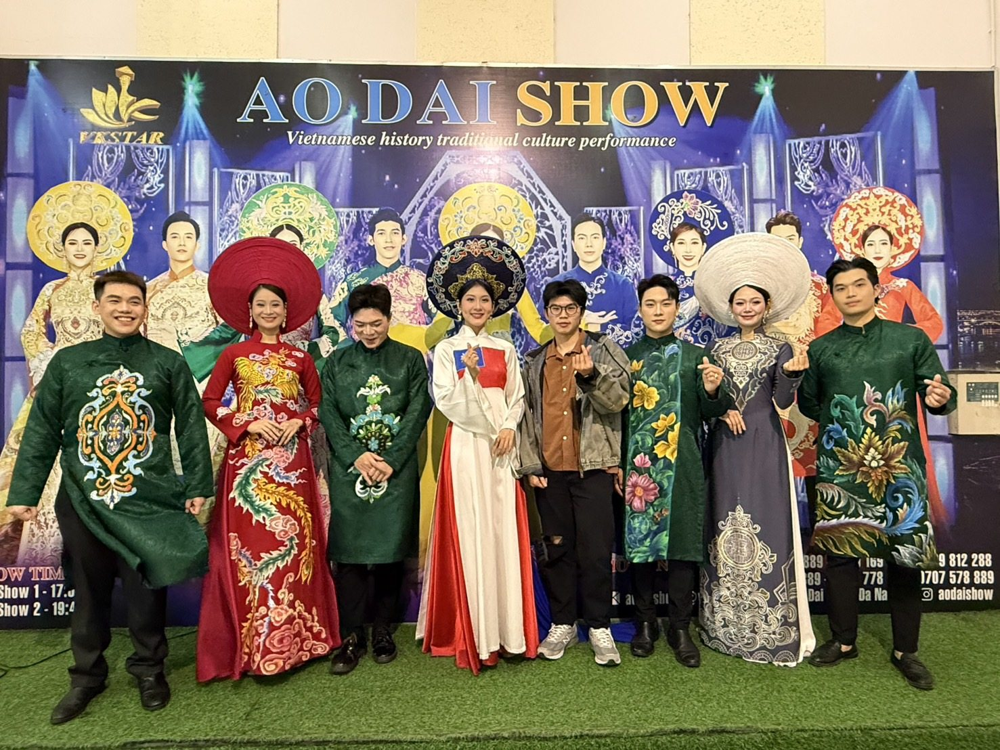
漢市場 Han Market
峴港市區熱鬧的傳統市場，可以逛服飾、乾貨和在地商品；挑選前先確認價格與商品內容。
峴港市區熱鬧的傳統市場，可以逛服飾、乾貨和在地商品；挑選前先確認價格與商品內容。
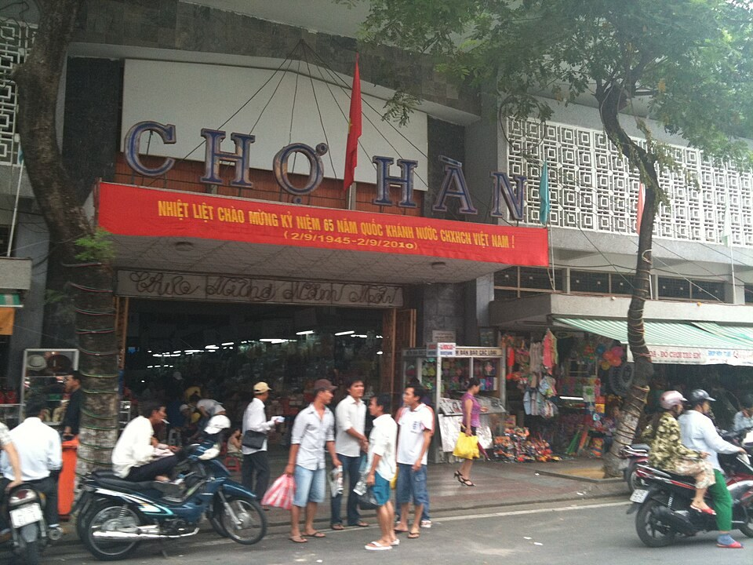
照片：Dragfyre，CC BY-SA 3.0，已縮圖

巴拿山｜纜車、佛手橋與法國村
搭纜車上山後，佛手橋、法國村和山上的雲霧會慢慢出現在眼前。
佛手橋看橋身與山景，法國村看歐式建築。拍完地標後，再看看園區地圖，確認自己與集合點的位置。
佛手橋看橋身與山景，法國村看歐式建築。拍完地標後，再看看園區地圖，確認自己與集合點的位置。
🏔️ 巴拿山散步時可以留意
黃金佛手橋（Golden Bridge）、法國村（French Village）、山頂星巴克和泡泡馬特，都是園區裡容易留下記憶點的畫面。
不需要照固定順序跑，走到喜歡的地方多停一下就好。
黃金佛手橋（Golden Bridge）、法國村（French Village）、山頂星巴克和泡泡馬特，都是園區裡容易留下記憶點的畫面。
不需要照固定順序跑，走到喜歡的地方多停一下就好。
佛手橋
小歐洲園區
星巴克
泡泡馬特
園區地圖
會安古鎮
黃牆老屋、燈籠與河岸，留給會安慢慢逛。
會安古鎮曾是熱鬧的貿易港口，老屋與街道留下不同文化交流的痕跡。黃色牆面、木窗、河岸與街邊小店都值得慢慢看。
白天可以逛巷弄、看看手工燈籠和小店；傍晚再走到河邊，感受燈光亮起後的古鎮。
傍晚到入夜之間，燈籠亮起來，古鎮又是另一種風景。
白天可以逛巷弄、看看手工燈籠和小店；傍晚再走到河邊，感受燈光亮起後的古鎮。
傍晚到入夜之間，燈籠亮起來，古鎮又是另一種風景。
迦南島椰子船
搭著圓圓的竹籃船穿過水椰林，看看沿岸的椰林風景，也感受船上的熱鬧氣氛。實際體驗仍以當團安排為準。
搭著圓圓的竹籃船穿過水椰林，看看沿岸的椰林風景，也感受船上的熱鬧氣氛。實際體驗仍以當團安排為準。
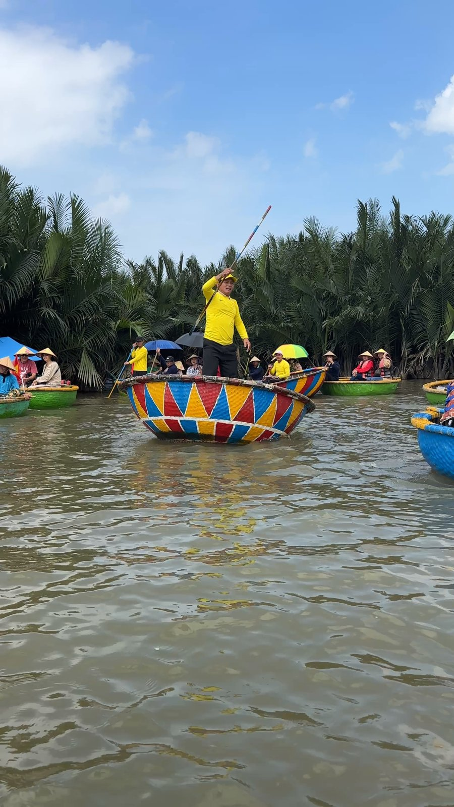
日本橋｜來遠橋
走進會安古鎮，可以看看這座帶著屋頂的古橋；橋上也有一處供奉的廟宇。
走進會安古鎮，可以看看這座帶著屋頂的古橋；橋上也有一處供奉的廟宇。
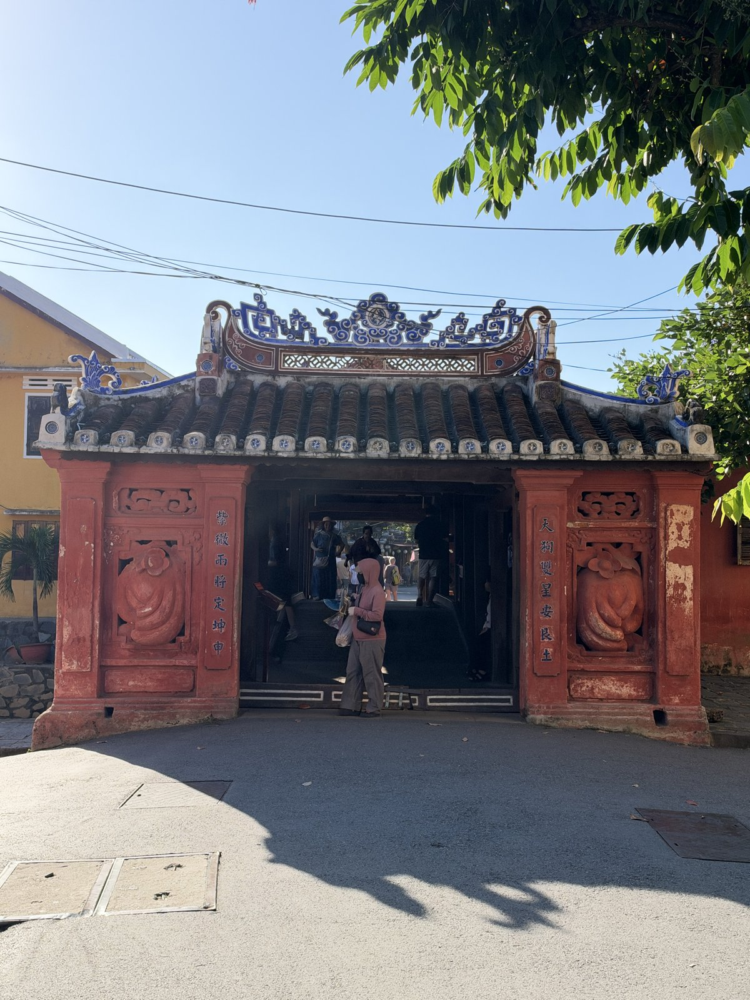
廣肇會館
色彩鮮明的門樓和雕飾，是古鎮裡值得停下來欣賞的建築細節。
色彩鮮明的門樓和雕飾，是古鎮裡值得停下來欣賞的建築細節。
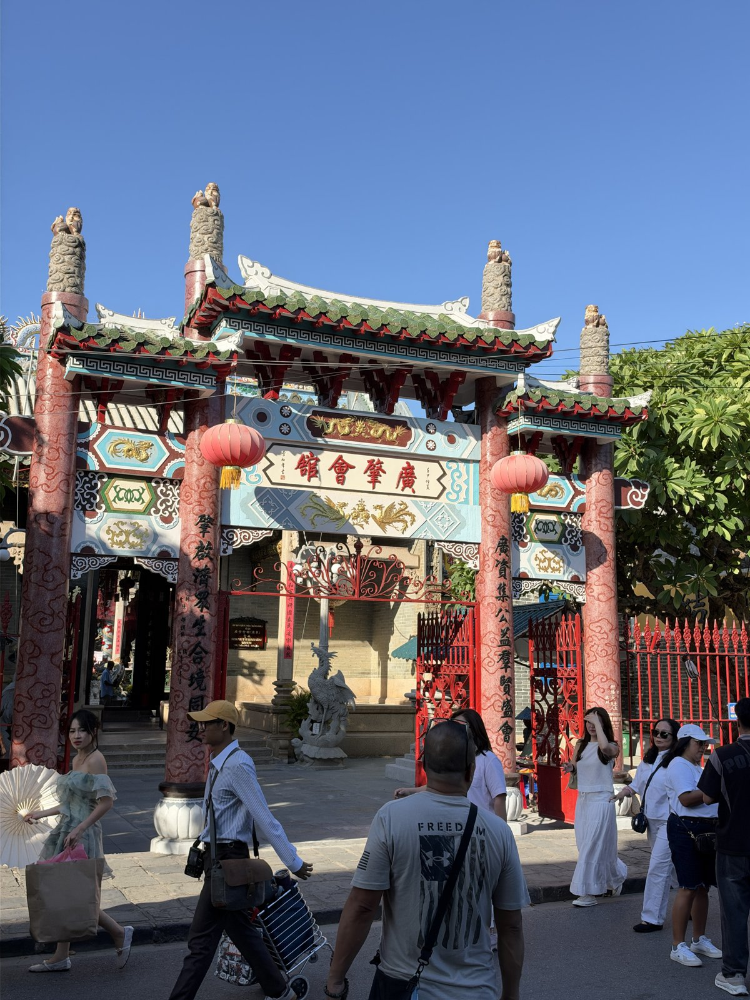
古鎮街道夜景
河邊燈籠小船
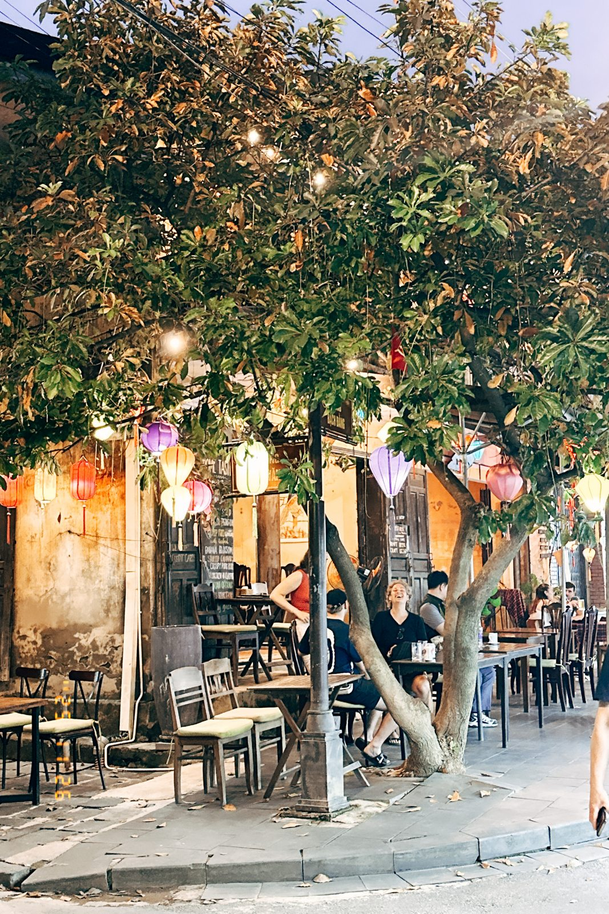
街邊小店
🛍️
YoYo 帶你買
巧克力、咖啡、果乾和燈籠，先分成吃的與擺飾，再挑適合的品項。
Grab 外送員外套
逛街時找到的 Grab 外送員外套，穿上留個旅行紀念。
逛街時找到的 Grab 外送員外套，穿上留個旅行紀念。
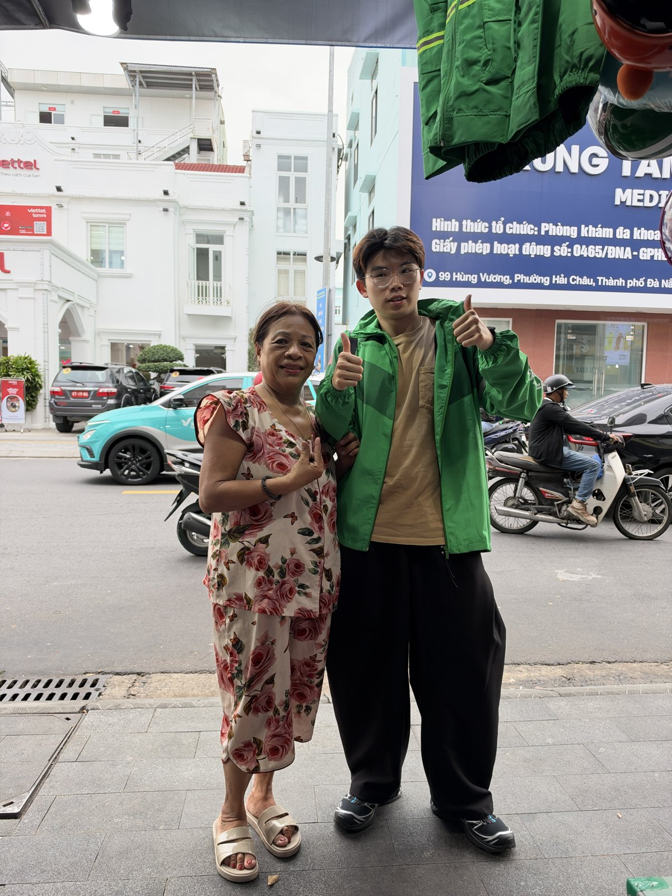
🎁 中越小選物
🍫
Marou 巧克力
包裝有地方感，適合挑幾款慢慢選。
☕
越南咖啡
留一點咖啡香，把旅行帶回家。
🛒
漢市場 Han Market
逛服飾、乾貨與在地商品，先確認價格與商品內容，再挑喜歡的。
🛒
GO! Đà Nẵng
想找零食、咖啡或小包裝伴手禮時，可以慢慢逛。
🏮
會安燈籠與小選物
留給自己當作古鎮散步的旅行紀念。
🥭
芒果乾
挑一兩包自己喜歡的口味，回家和朋友一起分享。
🥜
腰果
鹹香或原味都各有喜好，選適合自己和家人的就好。
💡 購物小提示
不需要照著清單全買，挑幾樣回家後還會想起中越的東西就夠了。
不需要照著清單全買，挑幾樣回家後還會想起中越的東西就夠了。